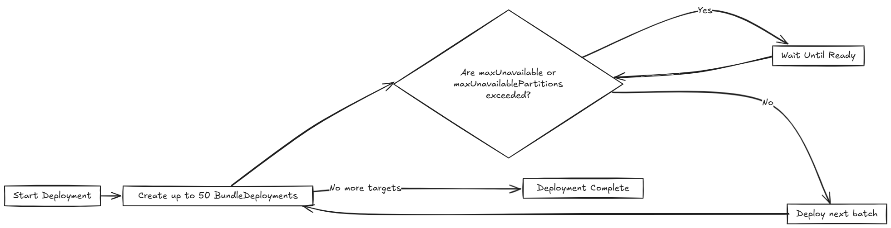

Rollout Strategy
SUSE® Rancher Prime Continuous Delivery uses a rollout strategy to control how apps are deployed across clusters. You can define the order and grouping of cluster deployments using partitions, enabling controlled rollouts and safer updates.
SUSE® Rancher Prime Continuous Delivery evaluates the Ready status of each BundleDeployment to determine when to proceed to the next partition. For more information, refer to Status fields.
During a rollout, the GitRepo status indicates deployment progress. This helps you understand when bundles become Ready before continuing:
-
For initial deployments:
-
One or more clusters may be in a
NotReadystate. -
Remaining clusters are marked as
Pending, meaning deployment has not started. -
For rollouts:
-
One or more cluster may be in a
NotReadystate. -
Remaining clusters are marked
OutOfSyncuntil the deployment continues.
The rollout configuration options are documented in the rolloutStrategy field of the fleet.yaml.
|
If |
How Does Partitioning Work?
Partitions are solely used for grouping and controlling the rollout of BundleDeployments across clusters. They do not affect deployment options in any way.
If targeted clusters are not part of the manual partitioning, they will not be included in the rollout. If a cluster is part of a partition, it will receive a BundleDeployment when the partition is processed.
Partitions are considered NotReady if they have clusters that exceed the allowed number of NotReady clusters. If a cluster is offline, the targeted cluster will not be considered Ready and will stay in the NotReady state until it comes back online and successfully deploys the BundleDeployment.
The threshold is determined by:
-
Manual partitions: Use
maxUnavailablevalue inside each partition to control readiness for that partition, otherwise, if unspecified, it usesrolloutStrategy.maxUnavailable. -
Automatic partitions: Use
rolloutStrategy.maxUnavailablevalue to control when a partition is ready.
SUSE® Rancher Prime Continuous Delivery proceeds only if the number of NotReady partitions remains below maxUnavailablePartitions.
|
SUSE® Rancher Prime Continuous Delivery rolls out deployments in batches of up to 50 clusters per partition, regardless of partitions having more clusters assigned. After each batch, SUSE® Rancher Prime Continuous Delivery checks the
|
The following diagram displays how SUSE® Rancher Prime Continuous Delivery handles rollout:

Various limits that can be configured in SUSE® Rancher Prime Continuous Delivery:
| Field | Description | Default |
|---|---|---|
maxUnavailable |
Maximum number or percentage of clusters that can be |
100% |
maxUnavailablePartitions |
Number or percentage of partitions that can be |
0 |
autoPartitionSize |
Number or percentage of clusters per auto-created partition. |
25% |
autoPartitionThreshold |
Minimum number of clusters required before auto-partitioning is enabled. Below this threshold, all clusters are placed in a single partition. |
200 |
partitions |
Define manual partitions by cluster labels or group. If set, autoPartitionSize is ignored. |
– |
SUSE® Rancher Prime Continuous Delivery supports automatic and manual partitioning. For more information about configuration options, refer to the rolloutStrategy option in the fleet.yaml reference.
Automatic Partitioning: SUSE® Rancher Prime Continuous Delivery automatically creates partitions using autoPartitionSize.
For example, you have 200 clusters and set autoPartitionSize to 25%, SUSE® Rancher Prime Continuous Delivery creates four partitions of 50 clusters each. Rollout proceeds in 50-cluster batches, checking maxUnavailable before continuing.
The autoPartitionThreshold setting controls when auto-partitioning is enabled:
-
Below the threshold: All clusters are placed in a single partition, regardless of the
autoPartitionSizesetting. This prevents unnecessary partitioning for small deployments. -
At or above the threshold: SUSE® Rancher Prime Continuous Delivery creates multiple partitions based on
autoPartitionSize. -
Customizable threshold: You can lower the limit to enable partitioning with fewer clusters (e.g., set to 50 for small-scale testing) or raise it to avoid partitioning until you have a large number of clusters (e.g., set to 500).
-
Disable auto-partitioning: Set to 0 to force all clusters into a single partition regardless of count.
For example:
rolloutStrategy:
autoPartitionThreshold: 50 # Enable partitioning with only 50 clusters
autoPartitionSize: 50% # Create partitions of 50% each
[source,text]With 50 clusters, this creates 2 partitions of 25 clusters each. Without setting autoPartitionThreshold, those 50 clusters would be in a single partition (since the default limit is 200).
Manual Partitioning: You define specific partitions using the partitions option. This provides control over cluster selection and rollout order.
|
If you specify partitions manually, the |
For example, consider:
rolloutStrategy:
partitions:
- name: demoRollout
maxUnavailable: 10%
clusterSelector:
matchLabels:
env: staging
- name: stable
maxUnavailable: 5%
clusterSelector:
matchLabels:
env: prod
[source,text]SUSE® Rancher Prime Continuous Delivery then:
-
Selects clusters based on
clusterSelector,clusterGroup, orclusterGroupSelector.-
Partitions can be specified by
clusterName,clusterSelector,clusterGroup, andclusterGroupSelector.
-
-
Starts rollout to the first partition.
-
Waits until the partition is considered
Ready(depending on themaxUnavailablethreshold). -
Proceeds to the next partition.
The following diagram illustrates how SUSE® Rancher Prime Continuous Delivery handles rollout across multiple partitions, including readiness checks and deployment flow:

|
MaxNew is always 50. A bundle change can only stage 50 |
Within each partition, SUSE® Rancher Prime Continuous Delivery rolls out up to 50 BundleDeployments at a time. The diagram below shows how SUSE® Rancher Prime Continuous Delivery determines whether to proceed or wait during this process:

|
SUSE® Rancher Prime Continuous Delivery recommends labeling clusters so you can use those labels to assign clusters to specific partitions. |
|
SUSE® Rancher Prime Continuous Delivery processes partitions in the order they appear in the |
Single Partition
If you don’t define rolloutStrategy.partitions, SUSE® Rancher Prime Continuous Delivery creates partitions automatically based on the number of targeted clusters:
-
For fewer than
autoPartitionThresholdclusters (default 200), SUSE® Rancher Prime Continuous Delivery uses a single partition. -
For
autoPartitionThresholdor more clusters, SUSE® Rancher Prime Continuous Delivery uses theautoPartitionSizevalue (default 25%) to create partitions.
For example, with 200 clusters (meeting the default autoPartitionThreshold), SUSE® Rancher Prime Continuous Delivery uses the default autoPartitionSize of 25%. This means, SUSE® Rancher Prime Continuous Delivery creates 4 partitions (25% of 200 = 50 clusters per partition). SUSE® Rancher Prime Continuous Delivery processes up to 50 clusters at a time, which means it:
-
Rolls out to the first 50 clusters.
-
Evaluate readiness based on
maxUnavailable.-
If the condition is met, proceed to the next 50, and so on.
-
Multiple Partitions
If you define multiple partitions, SUSE® Rancher Prime Continuous Delivery uses maxUnavailablePartitions to limit how many partitions can be NotReady at once. If the number of NotReady partitions exceeds maxUnavailablePartitions, SUSE® Rancher Prime Continuous Delivery pauses the rollout.
Preventing image pull storms
During rollout, each downstream cluster pulls container images. If hundreds of clusters begin pulling images simultaneously, this can overwhelm the registry and behave like a DDoS attack.
To avoid this, SUSE® Rancher Prime Continuous Delivery can control how many clusters are updated at a time. You can use the following rollout configuration options to slow down and stage the rollout:
-
autoPartitionSize -
partitions -
maxUnavailable
SUSE® Rancher Prime Continuous Delivery does not add artificial delays during rollout. Instead, it proceeds based on the readiness status of workloads in each cluster. Factors that affect readiness include image pull time, startup time, and readiness probes. Although using readiness probes is recommended, they are not strictly required to control rollout speed.
For example, you have 200 clusters, which are manually partitioned, each with 40 clusters and want to prevent an image pull storm:
-
maxUnavailablePartitions: Set to 0. -
maxUnavailable: Set to 10%.
How rollout proceeds:
-
SUSE® Rancher Prime Continuous Delivery begins with the first partition (40 clusters).
-
It deploys up to 50
BundleDeploymentsat once. So it deploys to all 40 clusters in the partition in one batch. -
SUSE® Rancher Prime Continuous Delivery checks the readiness of clusters in the partition.
-
If more than 4 clusters are not ready, then the partition is considered
NotReadyand the rollout is paused. -
Once ≤4 clusters are
NotReady, SUSE® Rancher Prime Continuous Delivery proceeds with the deployment.
-
-
When the entire partition is mostly ready (90%), SUSE® Rancher Prime Continuous Delivery moves to the next partition.
If you want or need to process fewer than 40 deployments at once, you can put fewer clusters into each partition.
Use Cases and Behavior
If the number of clusters doesn’t divide evenly, SUSE® Rancher Prime Continuous Delivery rounds down partition sizes. For example, 230 clusters with autoPartitionSize: 25% results in:
-
Four partitions of 57 clusters
-
One partition of 2 clusters
Scenario: 50 Clusters (Single Partition)
rolloutStrategy:
maxUnavailable: 10%
[source,text]-
SUSE® Rancher Prime Continuous Delivery creates one partition containing all 50 clusters, since no partitions are defined.
-
No requirement to specify
maxUnavailablePartitions, as only one partition is created. -
Although there is no specified manual partition and
maxUnavailableis set to 10%, SUSE® Rancher Prime Continuous Delivery deploys to all 50 clusters at once (batch behavior overridesmaxUnavailableinitially). -
Evaluation occurs after all deployments are created.
The following diagram illustrates how SUSE® Rancher Prime Continuous Delivery handles 50 clusters in a single partition:

Scenario: 100 Clusters (Single Partition)
rolloutStrategy:
maxUnavailable: 10%
[source,text]-
SUSE® Rancher Prime Continuous Delivery creates one partition containing all 100 clusters, since no partitions are defined.
-
No requirement to specify
maxUnavailablePartitions, as you have only one. -
Although there is no specified manual partition and
maxUnavailableis set to 10%, SUSE® Rancher Prime Continuous Delivery deploys to 50 clusters at once (batch behavior overridesmaxUnavailableinitially).
If 10 clusters (10% of 100 clusters) are unavailable, the deployment of the remaining 50 clusters is paused until less than 10 clusters are NotReady.
Scenario: 200 Clusters (Multiple Partitions)
rolloutStrategy:
maxUnavailablePartitions: 1
autoPartitionSize: 10%
[source,text]-
SUSE® Rancher Prime Continuous Delivery creates 10 partitions, each with 20 clusters.
-
Deployment proceeds sequentially by partition.
-
If two or more partitions become
NotReady, rollout pauses. -
If one partition is
NotReady, rollout can proceed to the next.
SUSE® Rancher Prime Continuous Delivery creates BundleDeployments for 20 clusters, waits for them to become Ready, then proceeds to the next. This effectively limits the amount of image pulls from downstream clusters to up to ~40 images at a time.
Scenario: 200 Clusters (Strict Readiness, Manual partitions)
Manual partitioning allows you control over cluster grouping with maxUnavailablePartitions: 0.
rolloutStrategy:
maxUnavailable: 0
maxUnavailablePartitions: 0
partitions:
- name: demoRollout
clusterSelector:
matchLabels:
stage: demoRollout
- name: stable
clusterSelector:
matchLabels:
stage: stable
[source,text]-
You define manual partitions using
clusterSelectorand labels likestage: demoRolloutandstage: stable. -
SUSE® Rancher Prime Continuous Delivery creates
BundleDeploymentsfor clusters in the first partition (for example,demoRollout). -
The rollout proceeds strictly in order, SUSE® Rancher Prime Continuous Delivery only moves to the next partition when the current one is considered ready.
-
With
maxUnavailable: 0andmaxUnavailablePartitions: 0, SUSE® Rancher Prime Continuous Delivery pauses the rollout if any partition is not considered ready.
The following diagram describes how SUSE® Rancher Prime Continuous Delivery handles whether to continue or pause rollout.

This ensures full readiness and staged rollout across all 200 clusters. Use this approach when you need precise rollout sequencing and full cluster readiness before advancing.
Rollout Strategy Defaults
If partition-level rollout values are not defined, SUSE® Rancher Prime Continuous Delivery applies the global values from rolloutStrategy in fleet.yaml. Partition-specific settings override global values when explicitly set.
By default, SUSE® Rancher Prime Continuous Delivery sets:
-
maxUnavailableto100%: All clusters in a partition can beNotReadyand still be considered Ready. -
maxUnavailablePartitionsto0: Prevents rollout only when one or more partitions are consideredNotReady. However, this check is ineffective if all partitions appear Ready due tomaxUnavailable: 100%.
For example, consider 200 clusters with default settings:
-
SUSE® Rancher Prime Continuous Delivery creates 4 partitions of 50 clusters each (
autoPartitionSize: 25%). -
Because
maxUnavailableis100%, each partition is treated asReadyimmediately. -
SUSE® Rancher Prime Continuous Delivery proceeds through all partitions regardless of actual readiness.
SUSE® Rancher Prime Continuous Delivery recommends you to control rollouts by setting:
-
Lower
maxUnavailable, e.g. 10%. -
Set
maxUnavailablePartitionsto 0 or higher, if desired.
This ensures:
-
Partitions meet readiness before rollout continues.
-
SUSE® Rancher Prime Continuous Delivery pauses rollout if too many partitions are not ready.